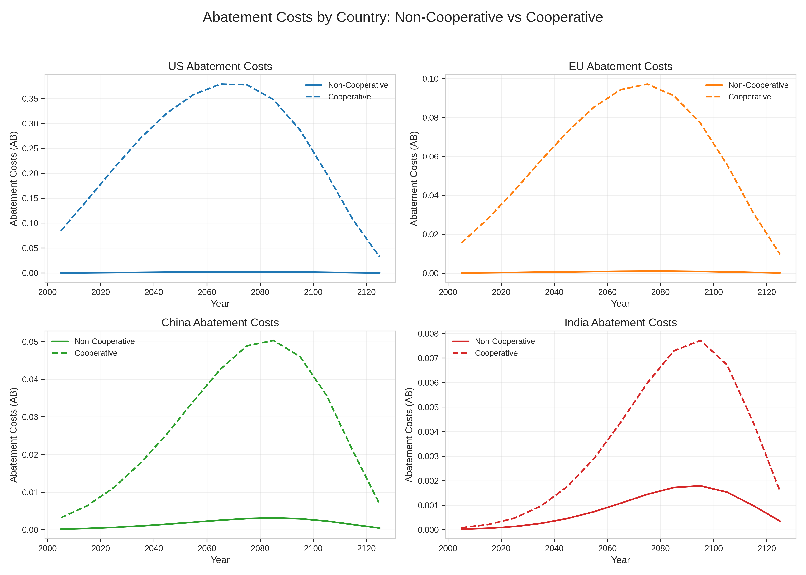
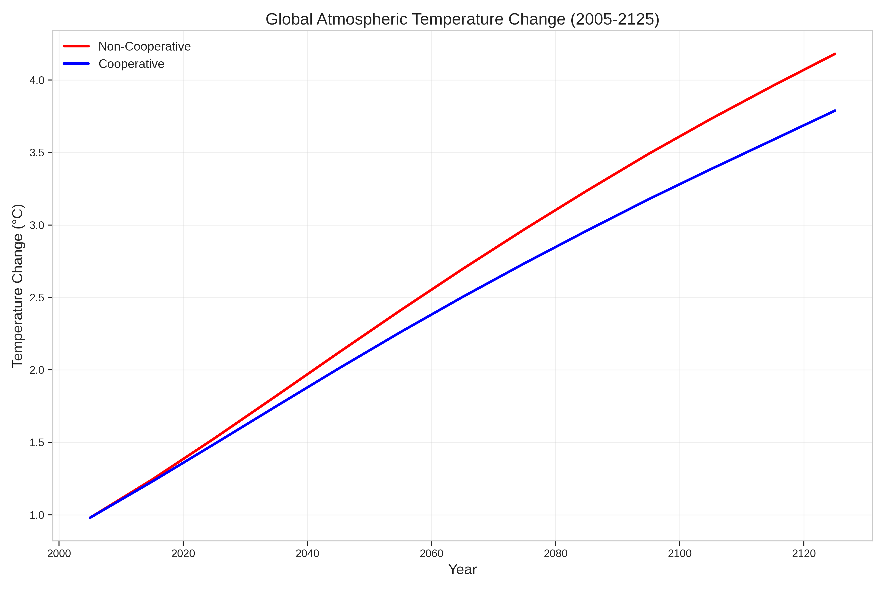

What are the economic and environmental outcomes of cooperative vs non-cooperative climate action among major emitters?
| DICE (Global) | RICE (Regional) |
|---|---|
| Single global region | Multiple heterogeneous regions |
| Aggregate emissions | Regional emissions |
| Global damage function | Regional damage profiles |
Two scenarios:
Focus: Comparing carbon pricing, emissions, and temperature across both scenarios.

| Region | 2005 | 2070 |
|---|---|---|
| US | 0.084% | 0.378% |
| EU | 0.015% | 0.094% |
| CHI | 0.003% | 0.042% |
| IND | 0.00008% | 0.0044% |

Future work:
Thesis: Cooperation improves outcomes.
“Climate change is a shared crisis. Solutions must be shared too.”